lecture #16
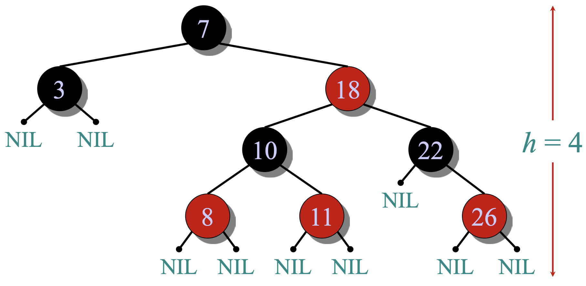
All four red-black properties satisfied.
Theorem: A red-black tree with \(n\) keys has height \(h \le 2\lg(n+1)\).
Idea: Merge each red node into its black parent to form a 2–3–4 tree with uniform leaf depth.
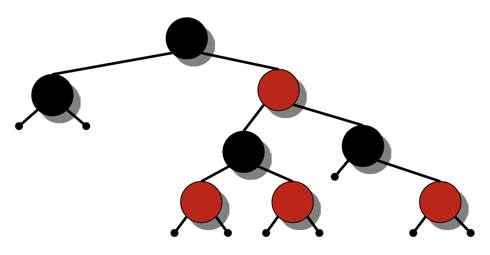
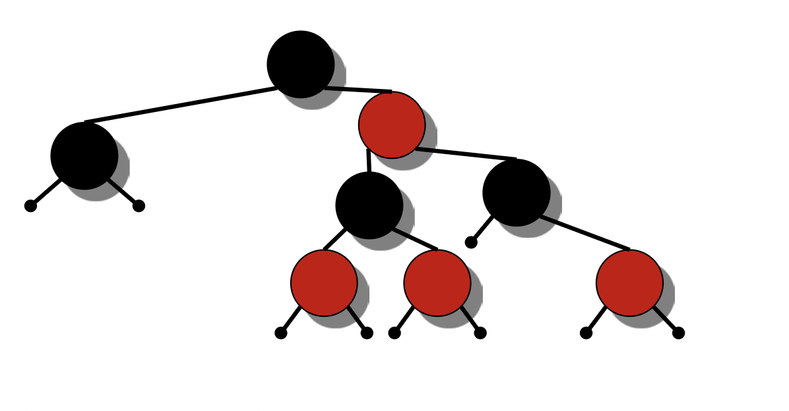
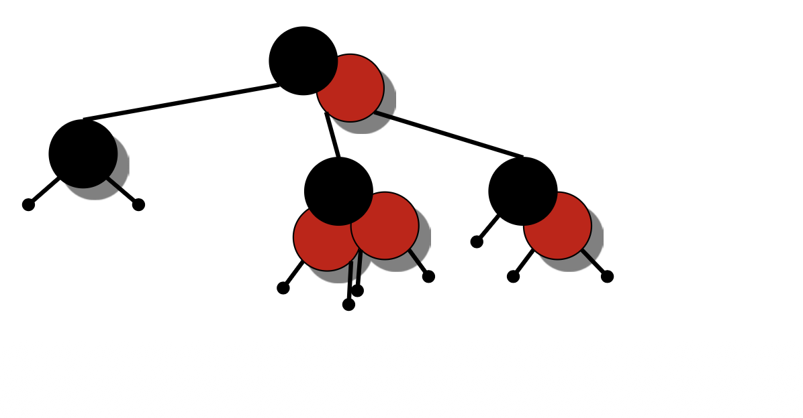
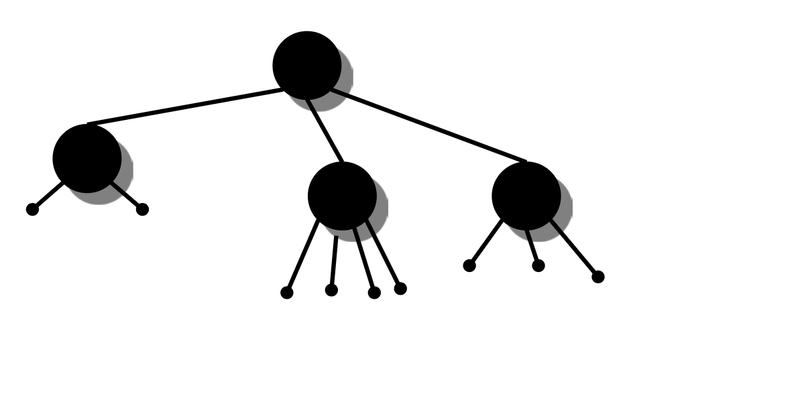
$$ h' \ge \frac{h}{2} $$
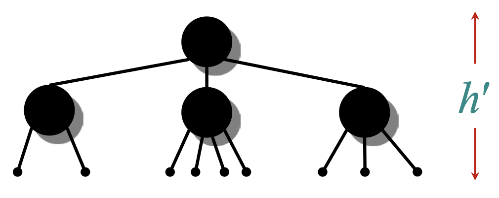
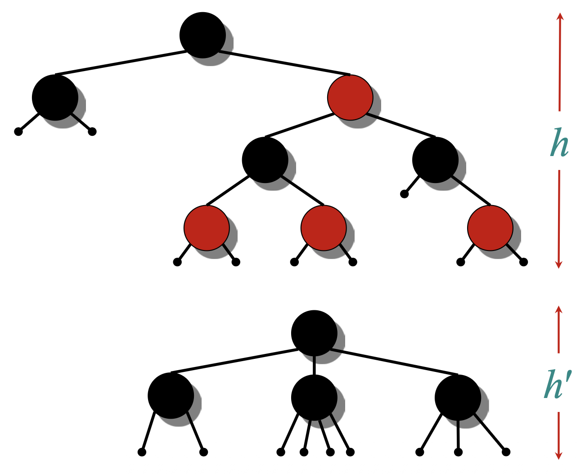
$$\Rightarrow \log_2(n + 1) \ge h' \ge \frac{h}{2}$$
$$\Rightarrow h \le 2 \log_2(n + 1)$$
Corollary: SEARCH, MIN, MAX, SUCCESSOR, PREDECESSOR run in \(O(\log n)\).
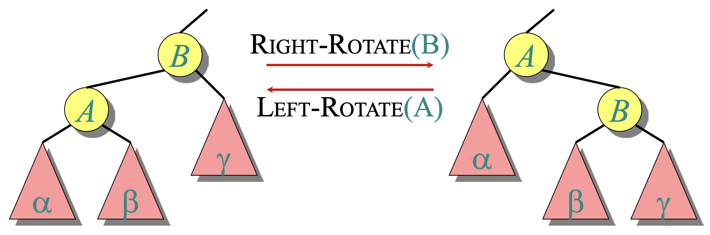
Rotations preserve in-order key order and run in \(O(1)\).
$$ a \in \alpha , b \in \beta , c \in \gamma \implies a \leq A \leq b \leq B \leq c $$
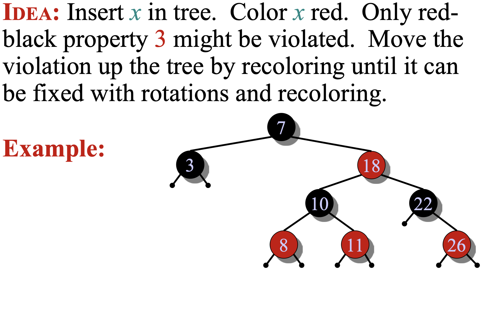
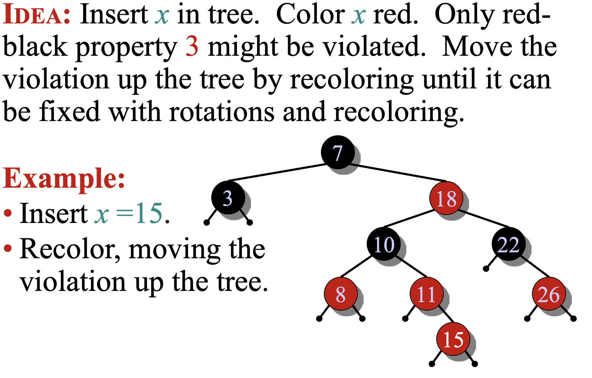
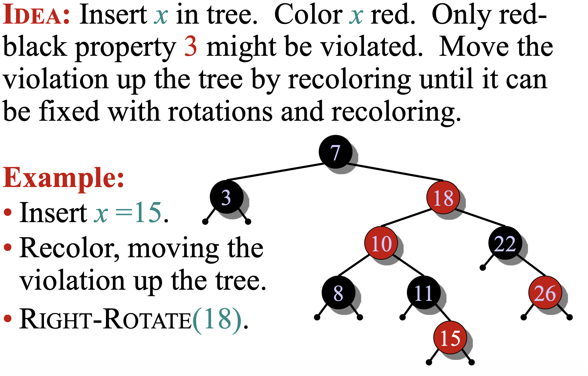
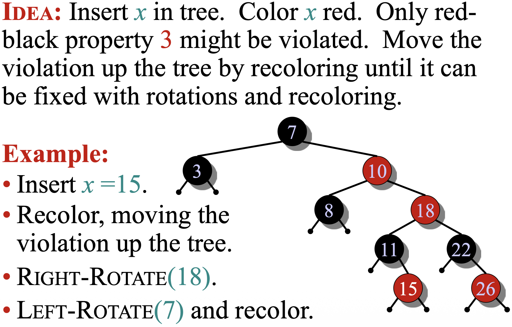
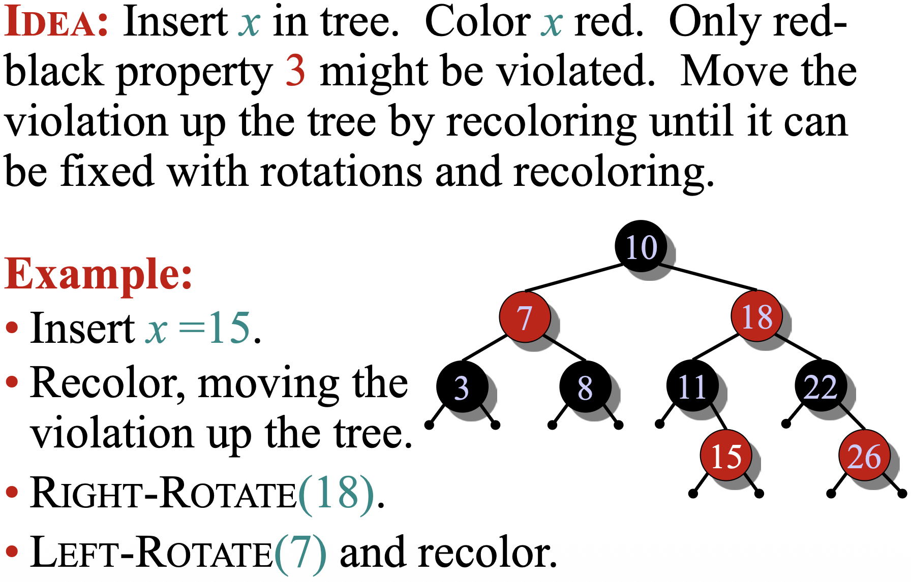
RB-INSERT(T, x):
TREE-INSERT(T, x)
color[x] ← RED
while x ≠ root[T] and color[parent[x]] = RED:
if parent[x] = left[parent[parent[x]]]:
y ← right[parent[parent[x]]] # "uncle"
if color[y] = RED: # case 1
color[parent[x]] ← BLACK
color[y] ← BLACK
color[parent[parent[x]]] ← RED
x ← parent[parent[x]]
...
else:
if x = right[parent[x]]: # case 2 → 3
x ← parent[x]
LEFT-ROTATE(T, x)
# case 3
color[parent[x]] ← BLACK
color[parent[parent[x]]] ← RED
RIGHT-ROTATE(T, parent[parent[x]])
else:
# symmetric: swap 'left' and 'right'
...
color[root[T]] ← BLACK
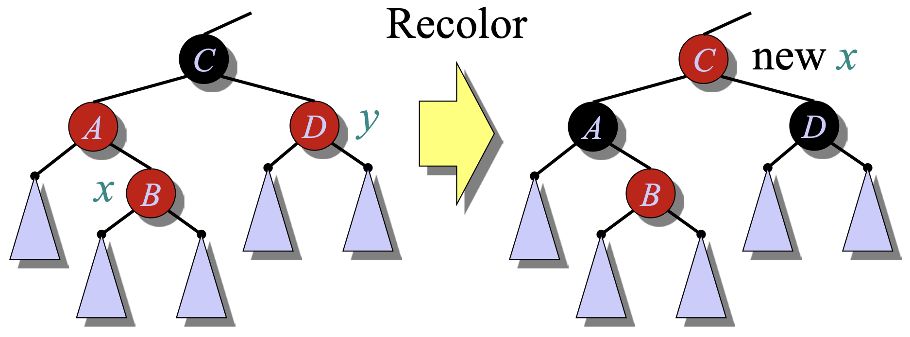
Parent and uncle red ⇒ recolor and move violation up.
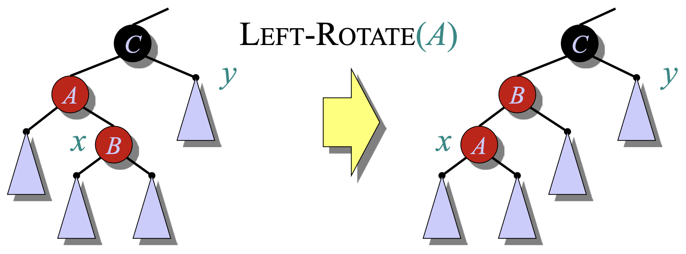
Inner configuration ⇒ one rotation converts to case 3.
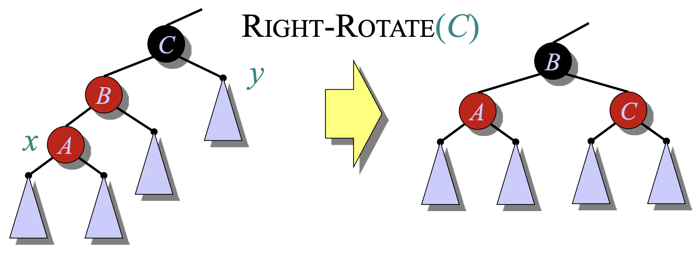
Rotation and recoloring ⇒ done.
RB-DELETE has analogous asymptotics and bounded rotations.